志工服務
Volunteer Services
積極參與校內活動，與行政、學術單位及其他社團合作，舉辦校園捐血、運動會救護、健康安全周宣導及急救教育訓練等。透過救護志工服務，提供緊急救護，提升應變能力且提高活動安全，深化急救知識，培養合作精神，展現社團專業性與貢獻，建立屬於急救社的社團價值。


「一起躺平，拯救世界」捐血活動
與「新竹捐血中心」、「忠義獅子會」合作，於校內全人大道設立上下學期為期3日的捐血活動，提供校內有捐血意願之師生能夠就近捐出熱血。同時與社團、校內招募志工，使有意願擔任志工服務之同學有擔任志工的機會。參與者到達現場後需要填寫登記表格，提供個人資訊並接受初步的健康評估，並確認捐血限制，確保符合捐血的條件，並由專業護理人員進行捐血流程。 捐血完成後，參與者會被安排休息和恢復，確保他們身體在捐血後的正常，若捐血者出現突發狀況護理人員也能第一時間發現並提供協助。捐血過程中有專業的醫療人員進行監督，處理任何不適或不良反應，確保捐血過程安全。
透過躺平捐血成為他人生命中的超級英雄，一袋袋承載著愛與溫度的血液，將化為醫療前線最堅實的後盾，為社會與急需幫助的人帶來希望與生機，從學生、教職員到社區民眾，每一位在全人大道上停留的腳步，每一袋熱血都是對生命的愛護。

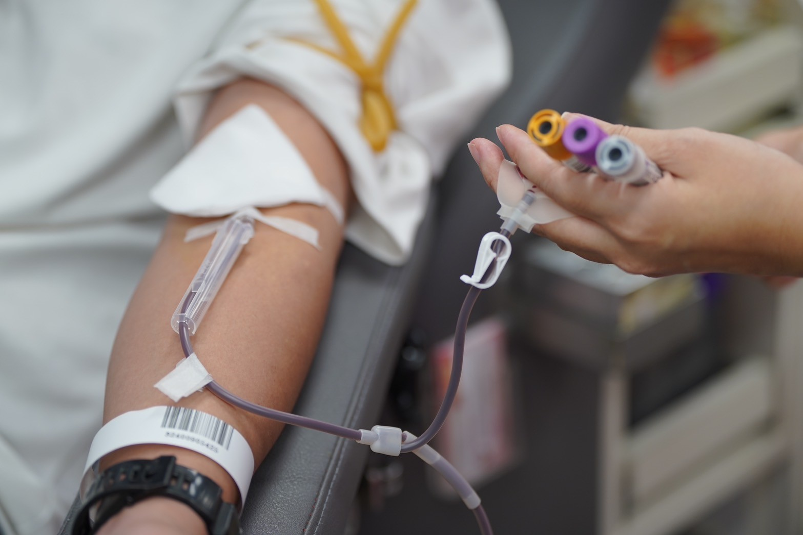
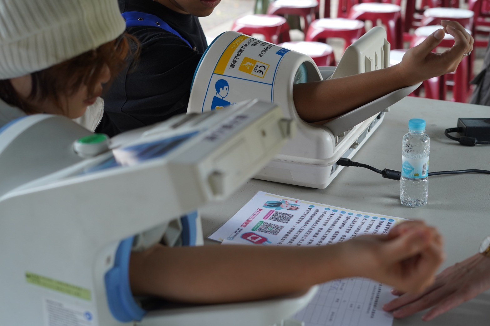
拯救生命的方式有很多種，而您選擇了最直接方便的一種
世界愛滋日主題倡議
響應世界愛滋日，2026首次將世界愛滋日主題納入年度推動，走進校園人群進行衛教推廣與去標籤化倡議，強調防治知識與友善接納的重要性，並特別邀請外籍學生共同參與規劃與宣導，使健康教育在語言與文化面向上更具可近性，也呼應校園中多元學習需求的實際樣貌。透過多文化背景學生的合作，U=U 所強調的科學理念能以更友善、清楚且貼近生活的方式被傳遞，也讓急救教育一向重視的「尊重差異、理解他人、願意在關鍵時刻伸手協助」在互動中自然展現。這項跨文化合作不僅成為今年的重要亮點，更象徵急救社將專業技能與文化交流緊密結合，使「守護」不再侷限於技術本身，而能延伸為跨文化、跨族。這不僅是一場公衛推廣，更落實全人關懷、消除社會偏見的重要實踐。
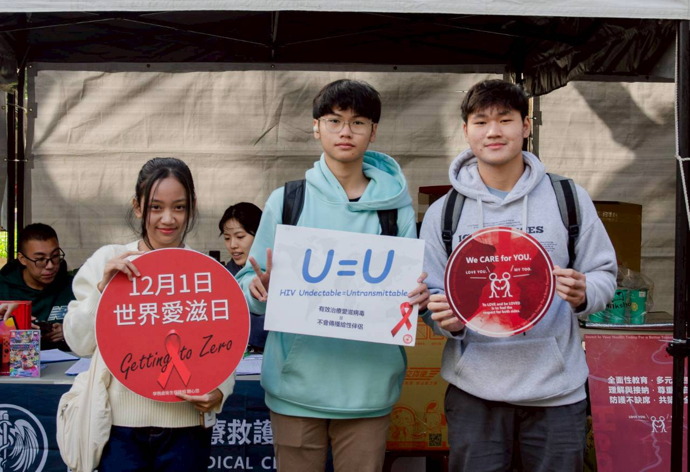
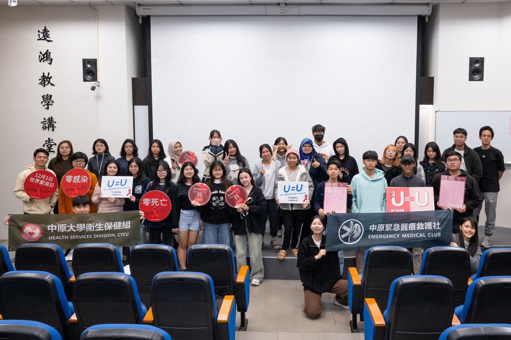
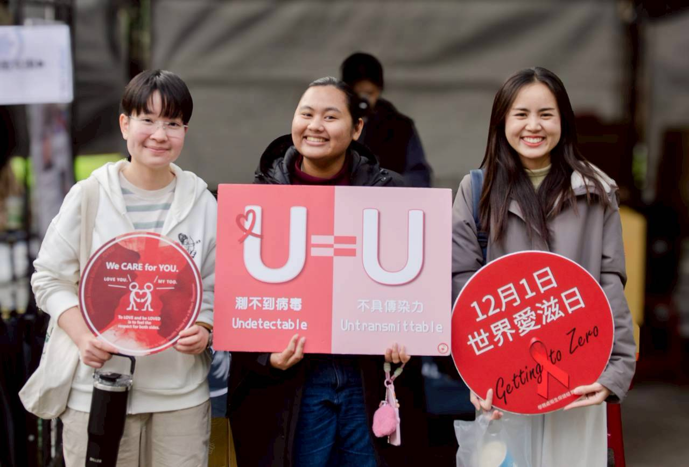
U = U 零感染
小運會救護志工
針對為期一天、賽程節奏明快的小運會，與中原衛保組合作設立救護站。賽事多為基礎田徑項目，勤務重點聚焦於衝刺後的肌肉拉傷評估、挫傷急救以及熱痙攣的預防處置。即便賽程較為簡約，志工仍秉持最高專業標準，嚴密監控場上動態，並在突發狀況發生的第一時間提供精準判斷，確保每位參賽者都能在安全的防護網下盡情發揮，將平時所學的情境實作轉化為穩定校園賽事運作的關鍵守護力量。希望藉由這樣的經驗讓更多人了解急救的重要性提升自我保護與互助的能力共同營造更安全、健康的校園環境。

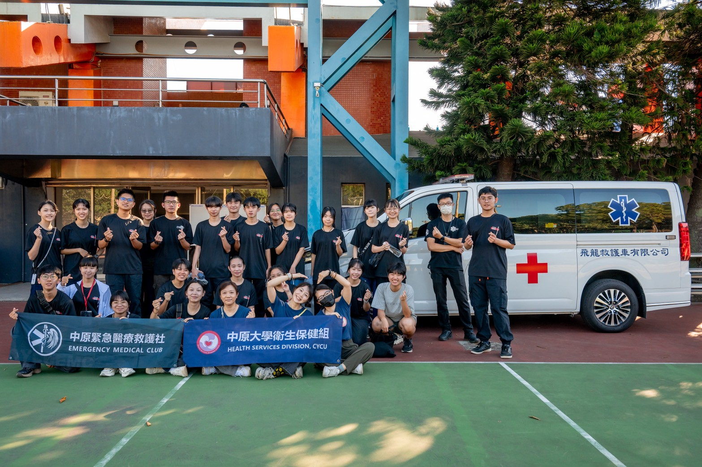
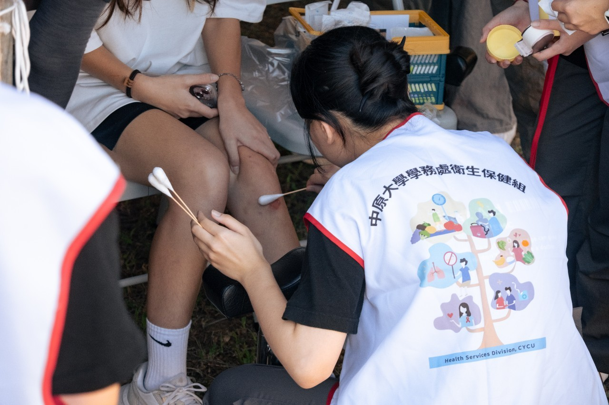
每年10月中旬
大運會救護志工
面對為期兩天、且以團隊接力賽項目為核心的大運會，與中原衛保組合作設立救護站，並提高醫療防護機制。無論是常見的輕微拉傷、擦傷、頭暈不適，以及各類緊急突發狀，皆能即刻進行評估與處置，確保每位參與者都能在安心的環境下投入比賽。這不只是單純的服務，更是一場真正走進現場的學習機會，將平時訓練的急救技能帶入實際情境中運用，從傷況判斷、基礎處置到臨場應變與安撫，每一個環節都是對專業與默契的考驗。
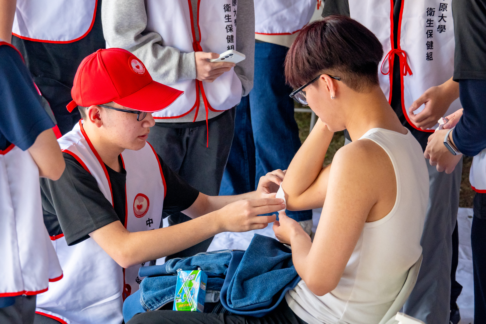

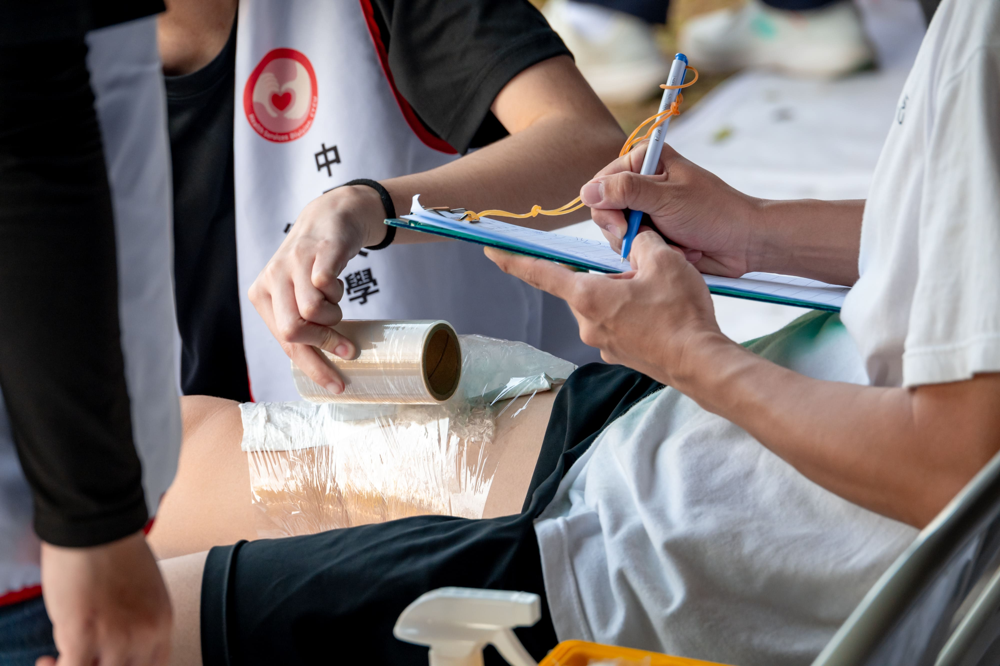
每年3月中旬
花蓮光復鄉馬太鞍村救護志工行動紀錄
指導老師的一句：「要不要一起去花蓮光復鄉擔任救護志工？」6位幹部幾乎沒多想，就一起回：「我們去！」這個決定代表放棄假期、面對未知的環境，但也代表，在需要的時候，我們願意在場。
凌晨六點出發，過了午夜才回到中壢，隔天一早，又重複同樣的行程。在這樣的節奏裡，疲憊變成一種默契，靴子滿是泥沙，卻踏實得讓人捨不得擦掉。出發前，我們買了新的防水靴、補齊醫療與防護物資，把三台推車裝得滿滿的這些不是行李，而是守護他人的重量。
在花蓮的三天裡，我們鏟土、搬運、補給、協助防護，也記下許多畫面：烈日下的笑聲、被汗水模糊的眼鏡、還有那句最簡單卻最暖的「謝謝你們願意來」。
「救護」不只是應變技術，更是一種陪伴與關懷的實踐。這次服務，讓我們重新體會了「行動」的意義。它不華麗，也不需要口號，而是一種踏實的力量，在別人需要的時候出現在現場，盡力做好該做的事。
這三天收到許多志工與居民的鼓勵與感謝，那些話語都成了我們繼續走下去的力量。或許災後的修復還需要時間，但那幾天我們看到的努力、善意與彼此扶持，讓人明白，真正的力量來自願意靠近的人。讓我們相信，這片土地終究會再度平安而閃亮。回到中壢的那一晚，車窗外還殘留著花蓮的風。我們都很累，但心裡很安靜，那種安靜，是知道自己真的有幫上忙。希望有一天再回到那裡，看見街道乾淨、人們平安，也許那時候，我們會微笑著想起：我們曾經在這裡。

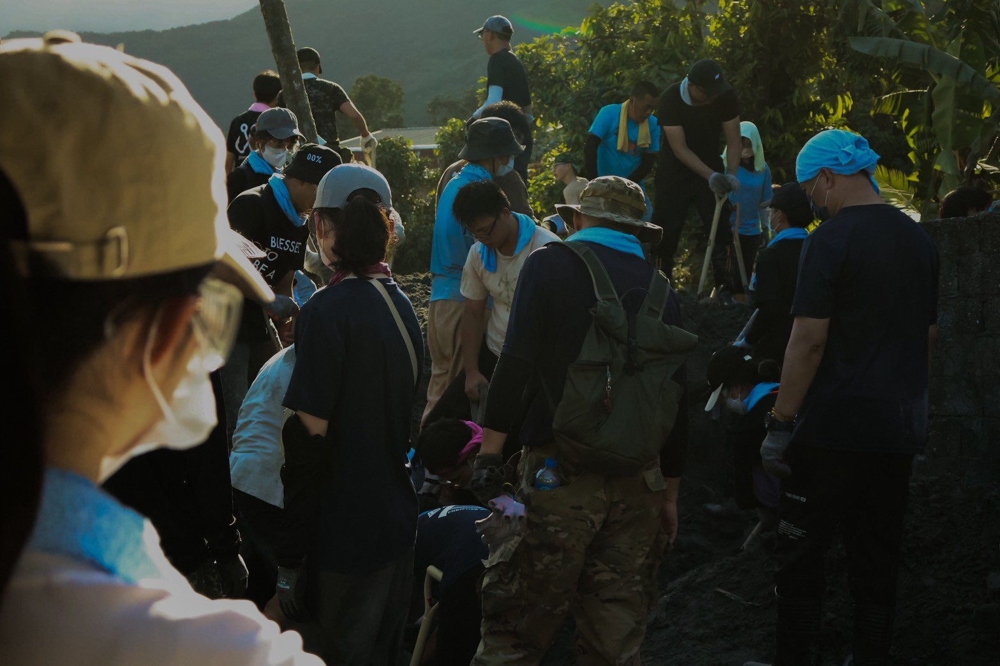
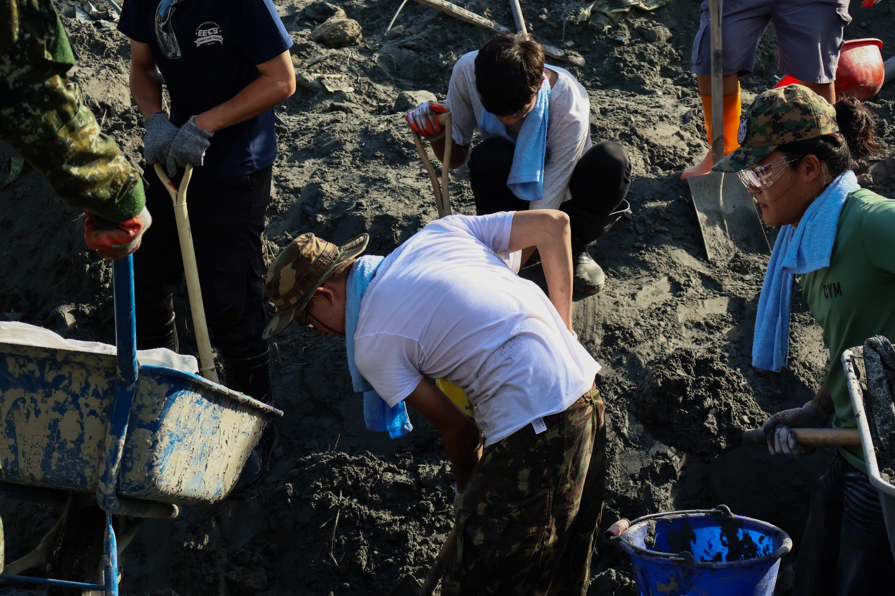
救護不僅是一項技術 更是在他人需要時悄悄靠近的溫度 2025.10.04-10.06
社團博覽會季活動醫療站支援
社團博覽會暨活動醫療站支援活動中，我們誠摯邀請每一位學員來了解急救的重要性，並感受公益服務的魅力。我們致力於將急救知識普及至每個角落，展現「急救人人會，公益人人行」的理念。此次活動中，除了提供專業的救護站服務，保障活動安全，在需要幫助時能及時給予最完善的處置，更額外設置了各式互動攤位，使參與者有機會親身體驗急救技巧，學習基礎急救知識，推廣校園的安全文化。我們相信，急救技能不僅在關鍵時刻挽救生命，更能使社會更加和諧及進步。透過此次活動，希望讓更多人意識到急救的重要性，同時吸引志同道合的夥伴加入，共同推廣公益與急救理念。
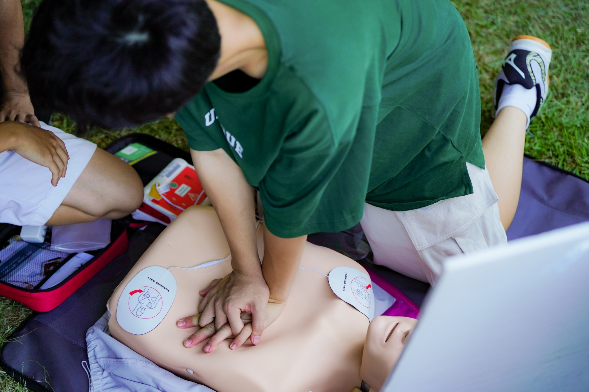
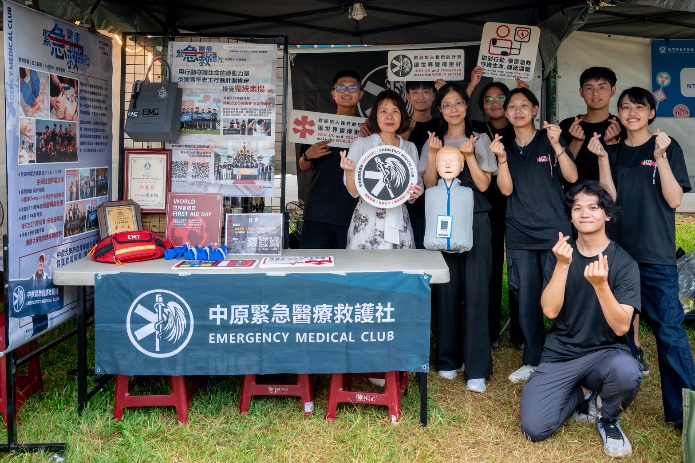
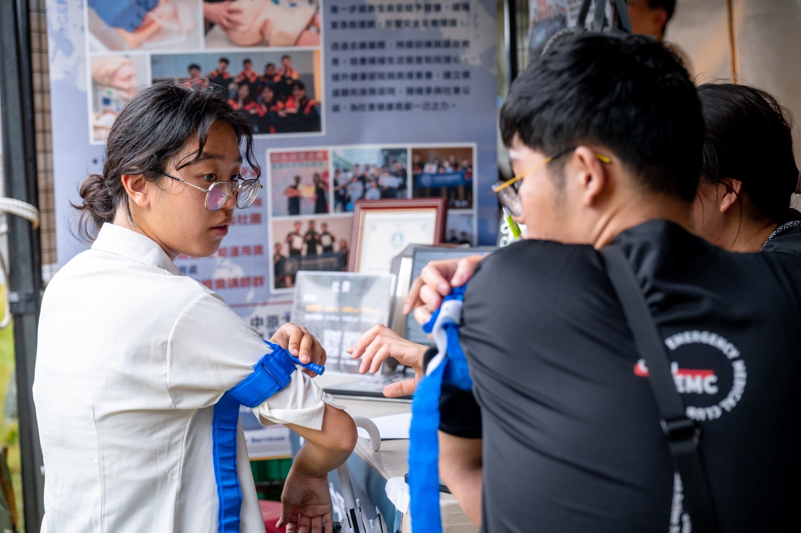
每年9月新學期開學前3天
典範全人校園路跑救護支援
與校內體育室及衛保組深度合作，協助進行活動救護站設置。不僅強化校級大型活動的安全防護網，更為社員提供寶貴的學習機會，將平時社課所學急救理論直接轉化為賽場上的專業行動。透過第一線的救護執勤，社員能在高張力的路跑環境中，針對突發狀況進行即時評估與處置。這些實務經驗有助於培養深厚的專業知識與臨場應變能力，在真實情境中磨練心理韌性。透過與校方行政體系的嚴密配合，我們在守護跑者安全的同時，也全方位提升了社員整體的急救實戰水平。
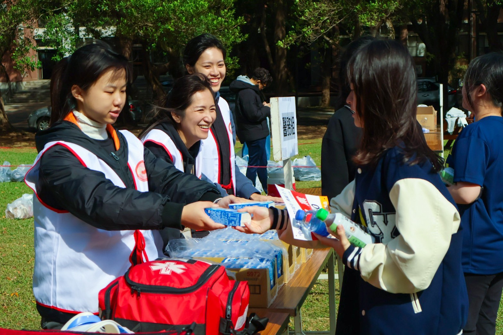
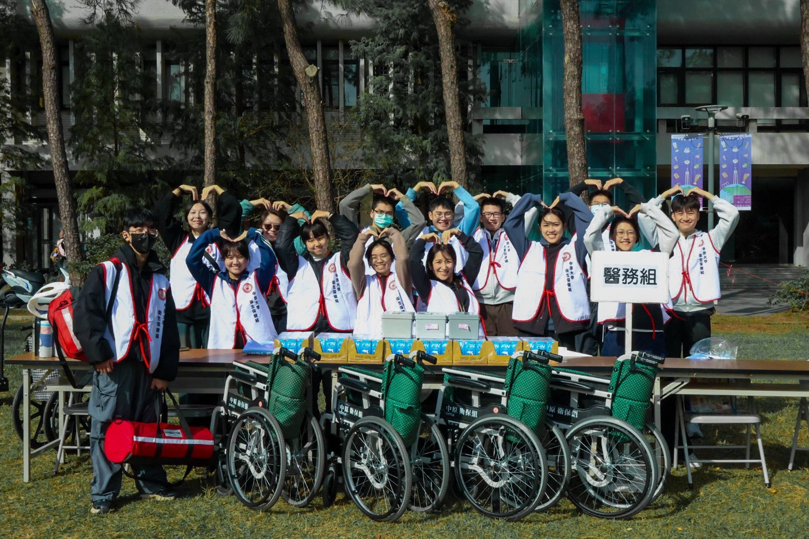
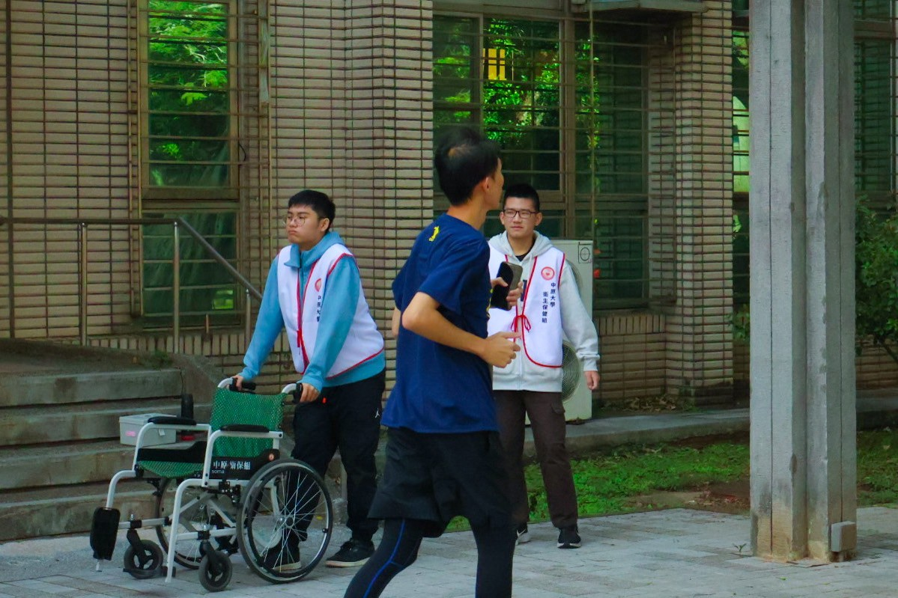
2024.12.04、2025.11.26
2024-SUKMAS 大馬運動會
這場跨國的救護實踐，讓社團足跡延伸至馬來西亞 SUKMAS 大馬運動會，與國際救護團隊並肩協作。社員在異國賽場中克服語言障礙，協助處理高張力賽事下的緊急醫療需求，並交流各國救護體系的作業流程。不僅提升了社員的國際視野，更在跨國實務中展現了急救社接軌國際的救護專業標準。
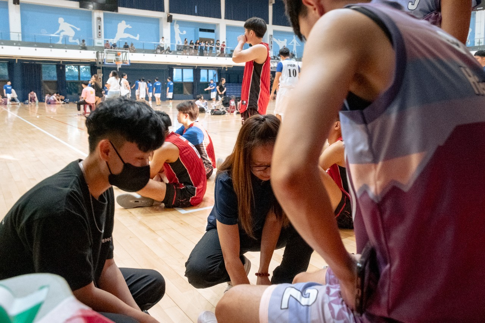
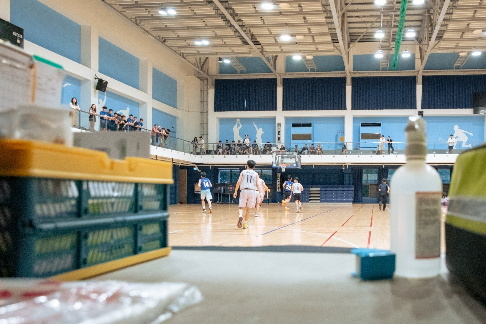
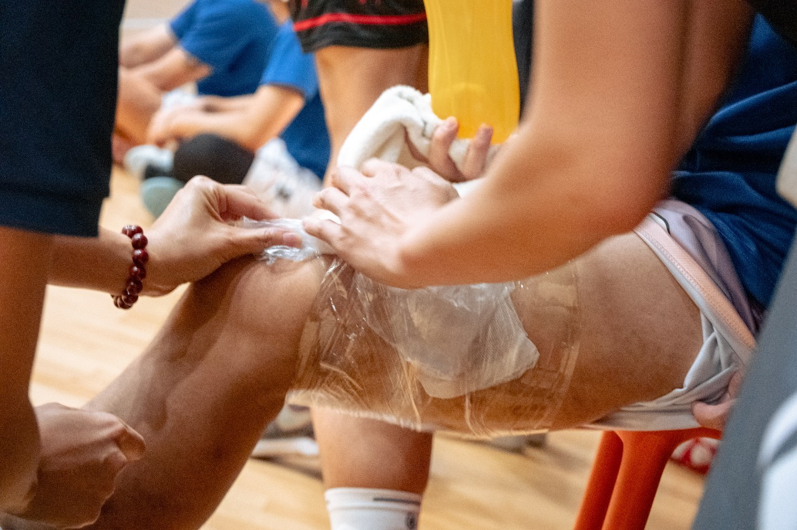